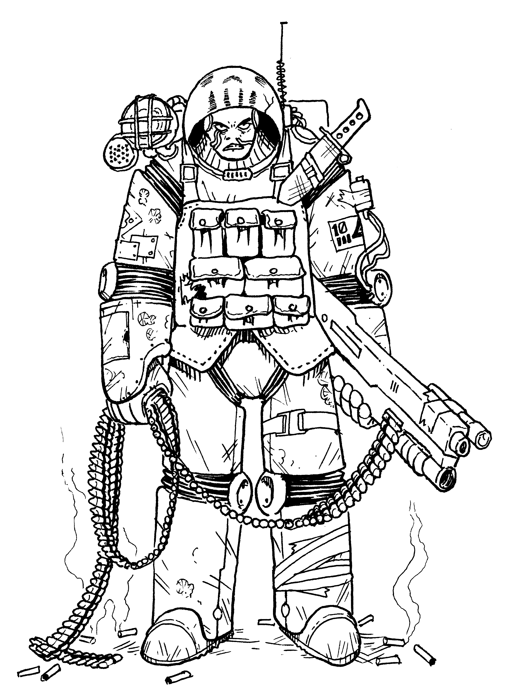
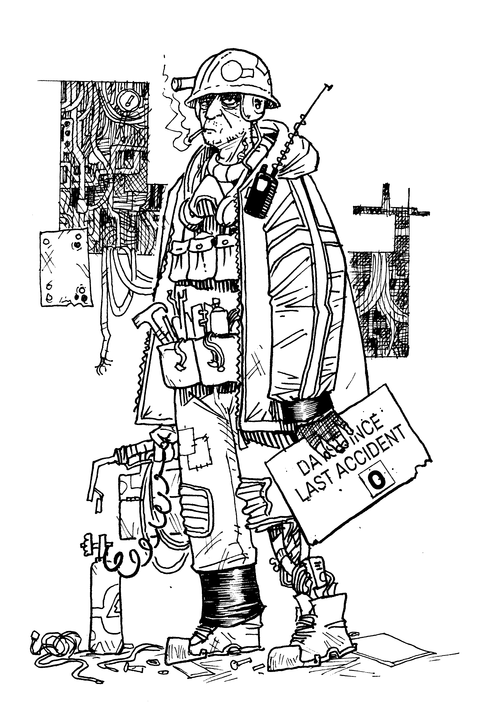
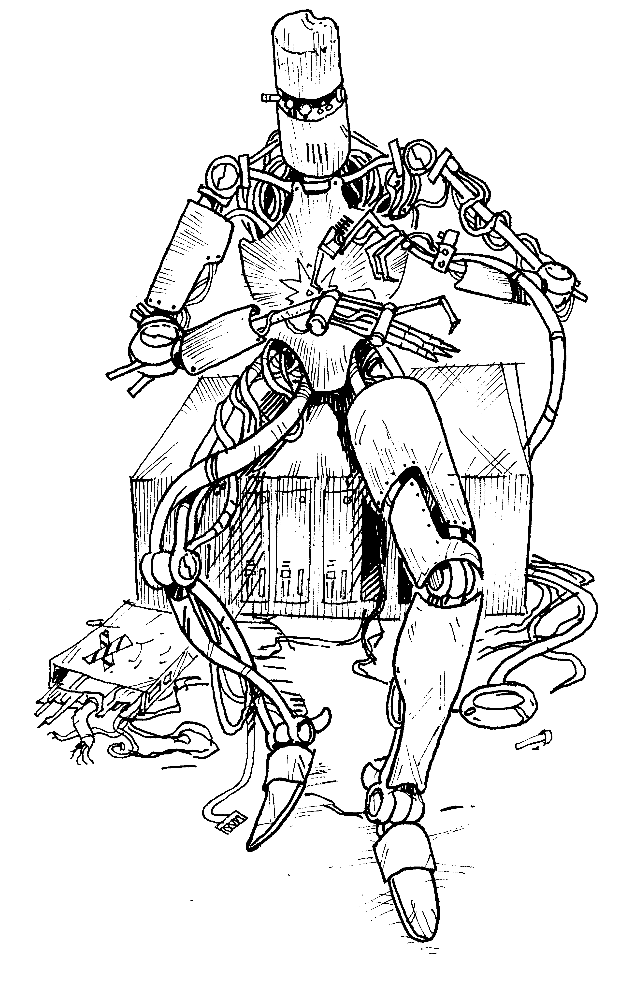
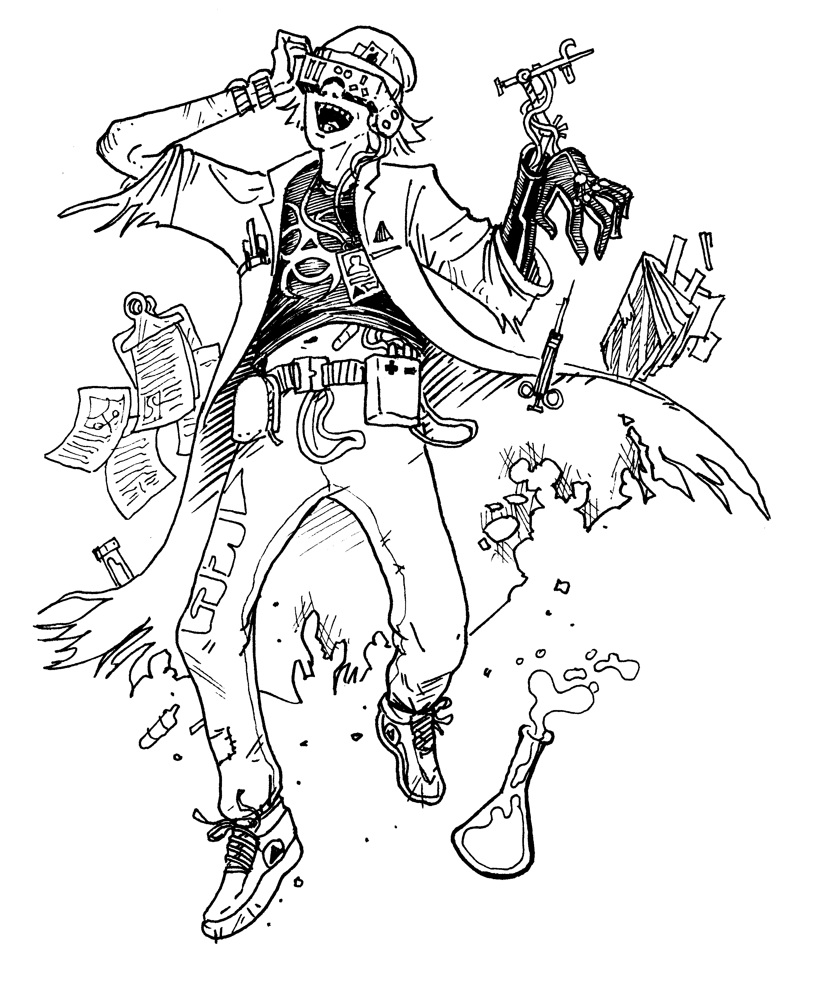

Classes
ARMOR
enforcer, marine, soldier, guard, grunt, merc

In this shitty universe someone is always going to be getting ground into the dirt, and given the choice you’d rather be wearing the boot than getting stepped on. You know the best way to survive a fight is to be sufficiently intimidating to make sure no one wants to start one in the first place. Not that you don’t know how to end a fight in short order if someone’s too stupid to know better.
Stat Bonuses
Increase your HP and Body by d3 each.
Skills
- Pick Two: Intimidation, Weapon Repair, Military Training, and Wrestling
- Two Random Skills
- Two Undefined Skills
Panic
Your most likely panic response is to Fight. Order Flee and Freeze as second and third most likely.
Talent
Reroll any of your damage dice that roll a 1.
Starting Equipment
You start with:
- Modded Hardened Vac Suit (1 Armor, bulky, 6 Oxygen)
Plus equipment based on your Max HP. If your highest Ability is below 10 you may choose another item from this list.
- 2HP PKD Revolver (1d8), 3x EMP Grenade (1d10 blast to electronics), Faraday Cage Suit Mod, One Random Augmentation
- 3HP Assault Rifle (1d8, bulky), 3x Frag Grenades (1d10 blast), AI Assistant Suit Mod
- 4HP Phased Microwave Array (1d8, nonlethal setting), 3x Flashbang (1d10 blast, nonlethal), Spotlight Suit Mod
- 5HP Flamethrower (1d8 blast, bulky), Fire Extinguisher (1d6), Motion Tracker Suit Mod
- 6HP Machine Gun (1d8 blast, bulky), Combat Knife (1d6), Loudspeaker Suit Mod
- 7HP+ Barracuda Tactical Shotgun (1d6 blast, 1d10 point-blank, bulky), 3x Smoke Grenades, Thermal Vision Suit Mod
WRENCH
deckhand, jacktar, teamster, pilot, technician

Piloting, modding, or fixing. You know your way around every part of a ship. Without you and your kind the whole system comes tumbling down. Not that most people see it that way, which is mostly how you want it. You can get away with a lot more while flying under the radar.
Stat Bonuses
Increase your Body and Resolve by d3 each.
Skills
- Pick Two: Zero-G, Engineering, Fast Talk, and Piloting
- Two Random Skills
- Two Undefined Skills
Panic
Your most likely Panic response is to Flee. Order Fight and Freeze as second and third most likely.
Talent
Get broken equipment to work with a plausible explanation and 1d4 Resolve per minute. It’s destroyed, or left inoperable, when you stop.
Starting Equipment
You start with:
- Tool Belt (bulky, holds most hand tools)
- Vac Suit (6 Oxygen)
Plus equipment based on your Max HP. If your highest Ability is below 10 you may choose another item from this list.
- 1HP Plastiform Pistol (1d8, jams on 8, invisible to scan), 3x Sticky Camera Bombs (d6 blast), One Random Augmentation
- 2HP Cutting Torch (1d8), Metalweave Coat (1 Armor, opaque to scans), Respirator
- 3HP Multipurpose Plasma Cutter (1d8), Bioroid Pet
- 4HP Plasma Projector (d8 blast, bulky), Bio-Plastic Spray, Universal Etchant
- 5HP Powered Sledgehammer (1d10, bulky, forceful), 3x Demo Charge (1d10 blast), Remote Detonator
- 6HP Pry-bar (d6), Rigging Gun (1d8, bulky, retractable harpoon), 3x Thermite Flare
SYNTH
android, robot, clone, cyborg, replicant

Grown, built, or otherwise, you’ve come into existence through an alternate means. Corporate tends to only consider you a person when its to their advantage. You’ve made your own mind up on that account, and you don’t need others to approve that decision.
Stat Bonuses
Increase your Resolve and Training by d3 each.
Skills
- Pick Two: Linguistics, Mathematics, Computers, and Cybernetics
- Two Random Skills
- Two Undefined Skills
Panic
You do not have a most likely Panic response. Instead, when you Panic you choose your response rather than rolling.
Talent
Your inventory slots with Augmentations can also store Fatigue.
Starting Equipment
You start with:
- Access Jack Augmentation (Interface with any computer. Charge to remotely interface in line of sight.)
Plus equipment based on your Max HP. If your highest Ability is below 10 you may choose another item from this list.
- 1HP Mono-molecular Sword (1d8), Remote Camera Drone, Personal Shield Augmentation, One Random Augmentation
- 2HP Gyrojet Pistol (1d8), Reinforced Duster (1 Armor), Signal Jammer, Holo-Projector Augmentation
- 3HP Mining Laser (1d10, bulky, one turn charge), 3x Timed Mining Charge (1d10 blast), Extra Arms Augmentation
- 4HP Welding Torch (1d8), Welding Fuel Tank (d6 bludgeon, d10 blast if ignited), Anti-Higgs Mass Neutralizer, Miniature Tractor Field Aug
- 5HP Arc Projector (1d6 blast), Liquid Nitrogen Canister, 3x Universal Epoxy Tubes, Fabricator Augmentation
- 6HP Neuronic Whip (1d8, Nonlethal), Lock Pick Set, Digital Override Cart, Smuggling Compartment Augmentation
LABCOAT
scientist, doctor, hacker, researcher, specialist

They sneer at you, call your ideas crackpot, claim your lab practices show a “blatant disregard for basic safety measures”. But when shit really hits the fan you’re the only one who knows what’s going on. The fact that you’re the one who caused shit to hit the fan is beside the point, and probably best kept a secret.
Stat Bonuses
Increase your Training by d6.
Skills
- Pick Two: Biology, Chemistry, Physics, and Hacking
- Two Random Skills
- Two Undefined Skills
Panic
Your most likely Panic response is to Freeze. Order Fight and Flight as second and third most likely.
Talent
Lose 1d4 Resolve to roll your full Training instead of any other Ability for a Save.
Starting Equipment
You start with:
- Omni-Scanner
- Vac Suit (6 Oxygen)
Plus equipment based on your Max HP. If your highest Ability is below 10 you may choose another item from this list.
- 1HP Syringe Launcher (1d6 or loaded syringe), Syringe Bandolier (3x Nano Healbot Syringe, 3x Stim Syringe), Stash of Empty Syringes, One Random Augmentation
- 2HP Shock Dart Pistol (1d8, nonlethal), 3x Tracker Tags (can be located with Omni-Scanner), Small Xenofauna Pet
- 3HP Magnetic Slug Thrower (1d6), Bio Dissection and Analysis Kit, Auto Med Kit
- 4HP Antique Revolver (1d6), Monofilament Wire, Grapple Hook, Auto-Ascender
- 5HP Laser Wristwatch (1d6), Optical Analysis Headset (Connects to Omni-Scanner for line of sight analysis)
- 6HP Pipe Wrench (1d6), 3x Jars of 190 Proof Alcohol, Vintage Rocket Shaped Lighter